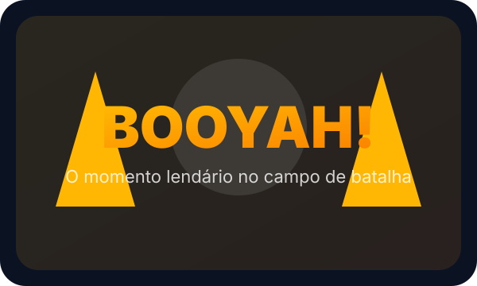
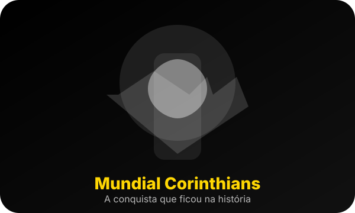
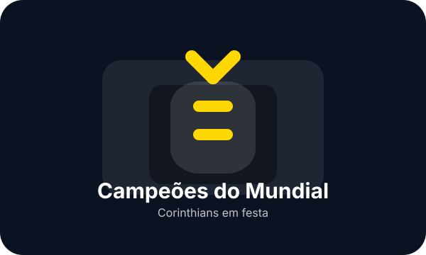

As 5 melhores armas para dominar o BOOYAH
Conheça as armas mais fortes de cada categoria e saiba quando trocar de equipamento durante a partida.
Veja dicas de gameplay, melhores armas, atualizações, memes e notícias que marcaram o Free Fire — ideal para quem acompanha a cena competitiva e quer sempre estar por dentro.
Use o posicionamento no mapa para pegar vantagem. Fique em áreas elevadas, evite tiroteios abertos e mantenha as zonas seguras sempre à vista.
Artigos e análises sobre armas, jogabilidade e upgrades.
Notícias de eventos, skins e mudanças de balanceamento.
Conteúdo voltado para quem joga com estratégia e quer evoluir rápido.
Artigos recentes para melhorar sua performance no Free Fire e entender os principais memes que viralizam na comunidade.
Conheça as armas mais fortes de cada categoria e saiba quando trocar de equipamento durante a partida.
Monte equipe, escolha posição e controle o ritmo para vencer rodadas com segurança e eficiência.
Fique por dentro das recompensas, cartas especiais e novidades que chegam ao jogo esta semana.
Relembre as piadas, casos e virais que fizeram toda a comunidade falar de Free Fire.

Booyah lendário
Corinthians Mundial
Campeões do MundialQuando o Pro do Booyah caiu e só alcançou o top 10, o meme tomou as redes com legendas e zoeiras.
Aquela partida em que o jogador entrou em uma cadeira invisível e o servidor virou piada entre os squads.
A frase virou meme nas lives e ajudou a popularizar desafios de mira e edição de vídeo.
As últimas mudanças, eventos, atualizações e memes que estão dominando a cena.
Teste o poder da EXA contra inimigos em curta distância e descubra os melhores modos para usar essa novidade.
Publicado há 2 horasParticipe do evento de verão para ganhar skins exclusivas e multiplicadores de pontos de experiência.
Publicado ontemOs jogadores compartilharam clips hilários do Petão derrubando squads inteiros. Veja como entrar nessa trend.
Publicado hojeOs primeiros dias de uso mostram quais habilidades garantem vantagem nas zonas apertadas.
Publicado há 8 horasDescubra esconderijos pouco conhecidos que podem virar rota de fuga ou armadilha para o inimigo.
Publicado há 2 diasConteúdo pensado para quem joga Free Fire com estilo, estratégia e não perde as noticias, memes e momentos que marcaram a comunidade.
Guia de armas, dicas de habilidade, análise de mapas, memes de Free Fire e listas com os momentos mais engraçados.
Conteúdo atualizado e direto, com foco em prática, táticas reais, tendências competitivas e as piadas que todo mundo comenta.
Sou apaixonado por Free Fire e trago as melhores jogadas, notícias frescas, memes e curiosidades para você não ficar por fora.